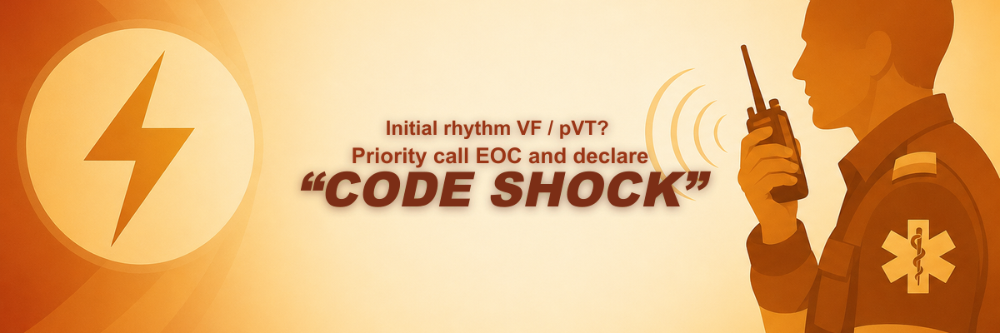

CODE SHOCK reminder for WMAS crews
The WMAS build of Resusci-Time includes a CODE SHOCK reminder. It appears after the first logged shock when the initial rhythm was VF / pVT, prompting the crew to inform EOC that a CODE SHOCK situation exists.

Why it matters
Shockable cardiac arrest may benefit from early coordination with EOC and the possible deployment of specialist clinicians to the scene or to support remote clinical decision-making. Notifying EOC at the right time helps the wider system respond sooner, which can lead to better patient outcomes.
The reminder is a prompt only — it does not replace local WMAS policy, crew judgement, or direct communication with EOC. It is there so the notification step is less likely to be missed under pressure.
What you will see in the app
Commence resuscitation with VF / pVT as the initial rhythm and log the first shock in Resusci-Time.
After that shock is recorded, an amber alert panel appears below the timer with the message:
CODE SHOCK notified to EOC
Once you have notified EOC, tap Acknowledge. The app adds a timestamped line to the event log (
CODE SHOCK notified to EOC) so the record reflects that the step was completed.
The panel stays visible until acknowledged. It does not block other actions on screen.
WMAS build only
This reminder is enabled only in the WMAS custom build (live and preview URLs for West Midlands crews). The Standard build and other trust builds do not show CODE SHOCK.
Open the WMAS app from your service link or bookmark — see your local Resusci-Time rollout contact if you need the URL.
Training tip
Run through a preview or training case with VF / pVT as the initial rhythm and log the first shock to see the panel and acknowledgement flow before you rely on it on a real job. It does not appear if the first monitored rhythm was PEA or asystole, even if the patient is shocked later. The preview build also lets you change protocol speed (1×–10×) from the header if you want a quicker walkthrough.
Feedback
If the wording, timing, or placement of this reminder should change to fit WMAS practice better, pass feedback to your clinical lead or the project maintainer.